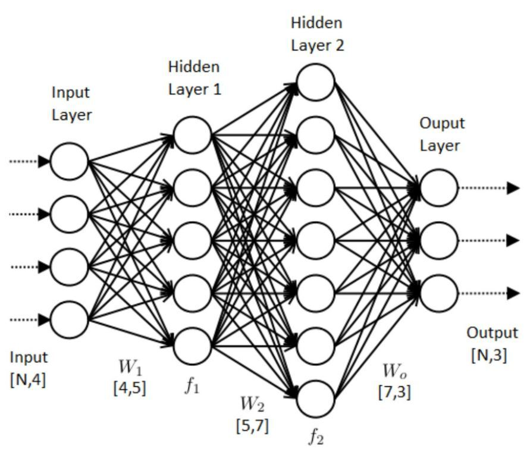

인공신경망이라고 불리는 ANN은 사람의 신경망 원리와 구조를 모방하여 만든 기계학습 알고리즘 입니다. 인간의 뇌에서 뉴런들이 어떤 신호, 자극 등을 받고, 그 자극이 어떠한 임계값(threshold)을 넘어서면 결과 신호를 전달하는 과정에서 착안한 것입니다. 여기서 들어온 자극, 신호는 인공신경망에서 Input Data이며 임계값은 가중치(weight), 자극에 의해 어떤 행동을 하는 것은 Output데이터에 비교하면 됩니다.
인공신경망은 시냅스의 결합으로 네트워크를 형성한 인공뉴런(노드)이 학습을 통해 시냅스의 결합 세기를 변화시켜, 문제 해결 능력을 가지는 모델 전반을 가리킨다. (출처 : 위키백과) 쉽게 설명하자면, 신경망은 다수의 입력 데이터를 받는 입력층(Input), 데이터의 출력을 담당하는 출력층(Output), 입력층과 출력층 사이에 존재하는 레이어들(은닉층)이 존재합니다. 여기서 히든 레이어들의 갯수와 노드의 개수를 구성하는 것을 모델을 구성한다고 하는데, 이 모델을 잘 구성하여 원하는 Output값을 잘 예측하는 것이 우리가 해야할 일인 것입니다. 은닉층에서는 활성화함수를 사용하여 최적의 Weight와 Bias를 찾아내는 역할을 합니다.
| 안현석 | 22세 |
| 라언정 | 24세 |